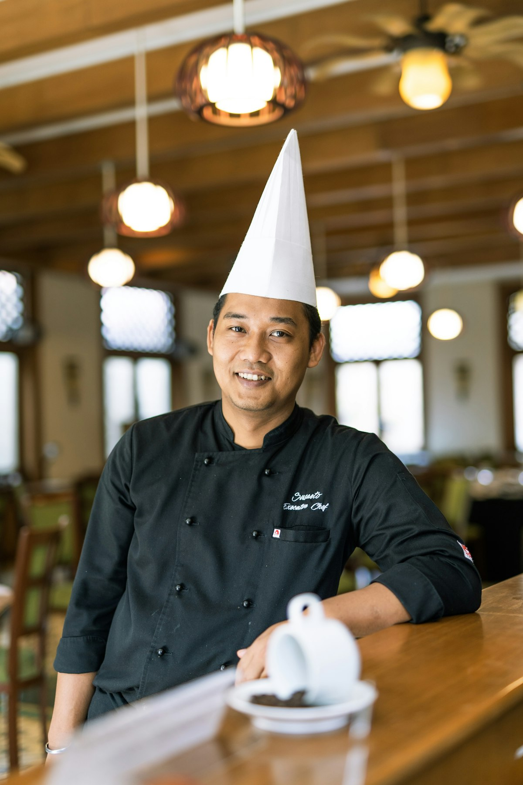

Born of Mountain Air, Ember Fires, and Ancient Conifers
CloveStewPine was founded in the high alpine valleys by a collaborative collective of culinary biochemists, heirloom cast iron restorers, and master forest foragers. Our shared obsession emerged from a simple realization: modern fast-paced cookery had abandoned the transformative thermodynamics of patient hearthside stewing.
In an era dominated by instantaneous pressure cookers and chemical artificial flavorings, we returned to the primal elements of food craft: seasoned iron, hardwood embers, mountain spring water, and the complex aromatic synergy of whole dried cloves and evergreen pine needles.

Ethical Forest Stewardship & Wild Conifer Harvest
We hold a strict covenant with the woodland ecosystems that nourish our culinary practice. Wild evergreen needles (Eastern White Pine, Balsam Fir, and Norway Spruce) are gathered exclusively from mature upper canopy branches following natural windstorms, or carefully hand-pruned from lateral shoots during spring flush.
We never harvest more than 5% of any single conifer tree, ensuring vitality and ecological balance. Every foraged batch of wild mushrooms, juniper cones, and wild mountain allium is thoroughly cataloged by GPS coordinates, seasonal climate metrics, and botanical species verification.
Our Four Foundational Guild Pillars
1. Uncompromising Thermal Patience
We reject rapid boiling. Every stew recipe is calibrated to maintain steady internal convective liquid temperatures between 175°F and 190°F, allowing collagen denaturation without fiber stress.
2. Whole Botanical Extraction
We use whole sun-dried spice buds and raw forest needles. This delivers continuous lipid-soluble eugenol and pinene diffusion without the oxidation or bitterness of commercial ground powders.
3. Heirloom Cast Iron Metallurgy
Our cooking vessels are heavy virgin cast iron and enameled French cocottes that distribute dense omnidirectional radiant heat and seal in essential volatile terpenes.
4. Zero-Waste Culinary Ecology
Bone scraps, vegetable trimmings, and spent botanical bouquet garnis are simmered into tertiary stocks, fermented into garden fertilizers, or returned to woodland soil.